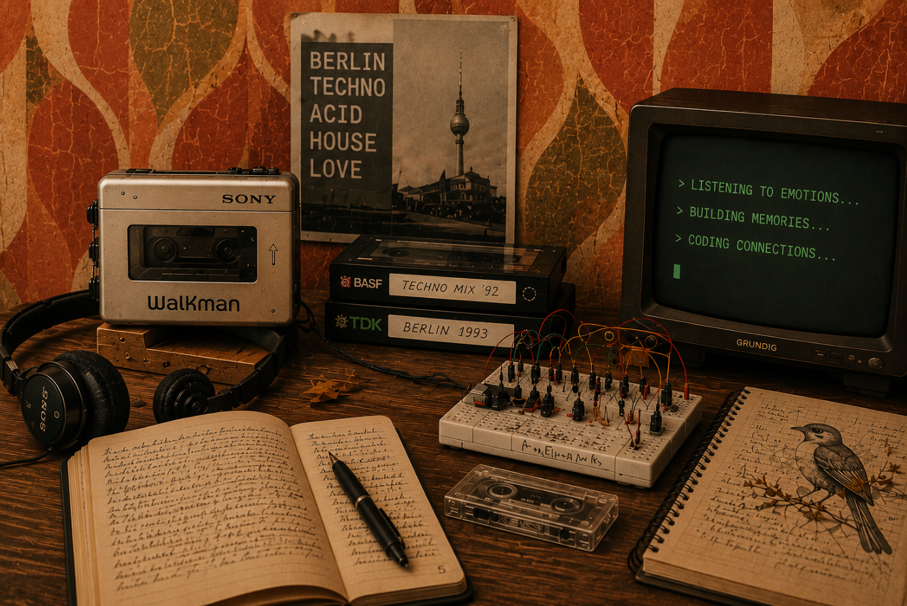

Desarrollo webs para proyectos independientes con personalidad
Mi trabajo consiste en escuchar quién eres, comprender qué hace único tu proyecto y convertir esa identidad en una web que transmita tu esencia con autenticidad
Desarrolladora front-end con mucha curiosidad por la intersección entre la programación, el hardware y la psicología

Mi trabajo consiste en escuchar quién eres, comprender qué hace único tu proyecto y convertir esa identidad en una web que transmita tu esencia con autenticidad